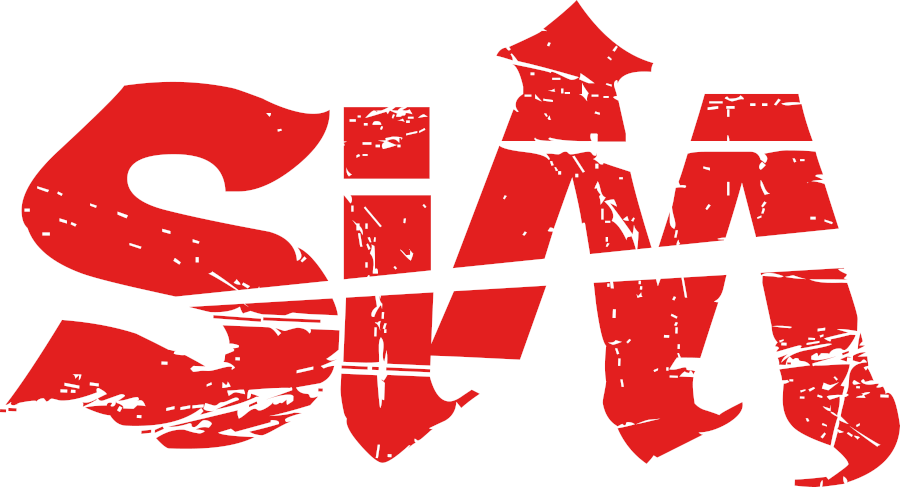
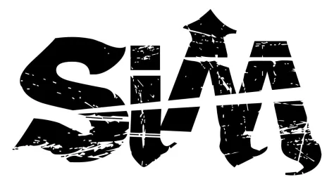

SiM (Silence iz Mine) es una banda japonesa de metal alternativo foramada durante 2004 en Shonan (Kanagawa).
Miembros de la banda
- MAH
- Name: Manabu Taniguti
- Birthday: August 5, 1986 (age 37)

- Birthplace: Kanagawa, Japan/dd>
- vocals (2004–present)
- guitars (2004–2006)
- MAH
- Name: Manabu Taniguti
- vocals (2004–present)
- guitars (2004–2006)
- SHOW-HATE
- Name: Shouhei Iida
- guitars, keyboards, backing vocals (2006–present)
- SIN
- Name:Shinya Shinohara
- bass guitar, backing vocals (2009–present)
- GODRi
- Name: Yuya Taniguchi
- drums, backing vocals (2009–present)
Estilo musical
El estilo musical de SiM combina diferentes estilos como el rock alternativo, hardcore, nu metal, punk rock, ska, reggae y dub.
Se podría describir el sonido como algo similar a la banda galesa Skindred. Casi todas las letras están enteramente escritas
en inglés aunque últimamente han empezado a usar algunas frases en japonés en algunas de sus canciones.
Discografia
Sencillo
Paint Sky Blue (2007)
LET iT END (2017)
LiON'S DENS (2018)
Ligth It up (2022)
LP